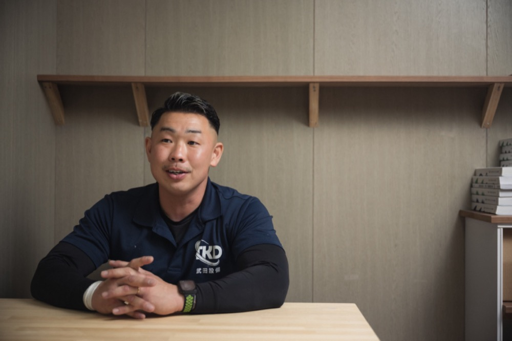
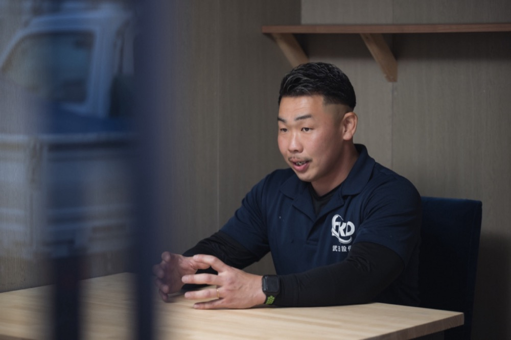
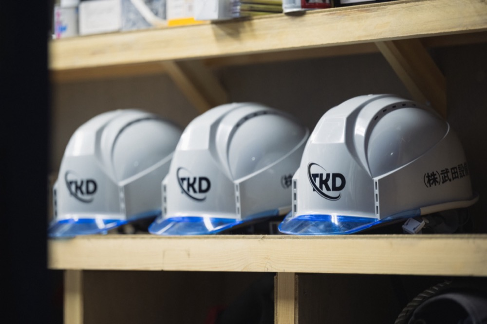
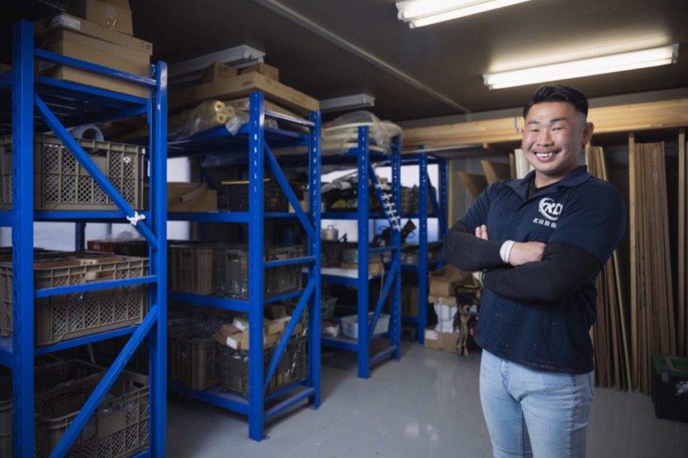

日常に向き合い続ける会社
武田 儀幸Yoshiyuki Takeda
株式会社武田設備 代表取締役
千葉県九十九里町出身。中学卒業後父が営む水道設備業に入り、約20年間実務経験を積む。2022年に独立し個人事業を開始、2024年には株式会社武田設備を設立。現場経験に裏打ちされた技術力と挑戦的な経営姿勢で、地域に密着したリフォーム事業を展開している。
企業サイトを見るTRACK 01
日常に向き合い続ける会社

日々の暮らしを支える住宅設備が、近年めざましく進化している。蛇口をひねれば即座に適温のお湯が流れ、調理器具は精密な温度管理をこなす。「便利」を超えて、「快適」が求められる時代になった。かつては「使えればよい」と考えられた設備も、今では使い勝手や心地よさが重視されるようになった。日常生活の質を向上させることは、日々の小さな満足感を積み重ねることに他ならない。
株式会社武田設備の代表取締役、武田儀幸氏は、職人の世界で長年研ぎ澄まされた鋭敏な感性と、稀有な実行力を持つ人物である。その卓越された住宅設備の技術と、長年培ってきた信頼で、クライアントからの依頼は留まるところを知らない。
TRACK 02
「やってみなければ何も変わらない」

2024年に千葉市中央区で株式会社武田設備を設立した武田は、もともと個人事業として活動していた水道設備業を法人化し、地域に密着した住宅リフォームをはじめ、店舗やガソリンスタンドの設備改修など、多彩な工事を幅広く手掛けている。武田氏が創業を決意した背景には、父のもとで水道設備工事に20年以上携わり、多くの現場を経験したことで培われた強い実務能力と深い業界知識がある。
父親の会社は主にガソリンスタンドの新築工事を行っていたが、年間を通じて仕事が安定的に入るわけではなかった。その不安定さを目の当たりにした武田は、自らが中心となって安定的に仕事を生み出せる新たな分野を探求し始めた。そして、辿り着いたのが住宅リフォームという市場だった。地元密着型の事業であれば継続的な需要を見込めると判断した彼は、自ら未知の分野へと大胆に踏み込む決意を固めた。
さらに独立直後、地元の信頼できる友人であり、長年の現場経験を持つ人物を工事主任として迎えることに成功。これにより、武田設備は設計から施工までを一括で提供する独自の施工体制を構築することができた。経験豊かな工事主任の力を借りて迅速かつ高品質なサービスを実現し、武田設備の強固な基盤構築と業績向上に大きく貢献した。


TRACK 03
お客様の前で120％のものを
彼の経営する武田設備の特徴は、設計から施工まで自社で完結する一貫体制だ。通常、異なる専門職がそれぞれの仕事を分担して行う業界の中で、この体制を構築することは容易ではない。しかし、武田氏は友人であり現場経験豊富な工事主任を迎え入れ、難易度の高い業務を迅速かつ高品質に仕上げる独自の施工スタイルを確立した。この独自のアプローチが顧客や取引先から大きな信頼を得ている。
武田氏には仕事への強いこだわりがある。顧客の視点に立ちつつ、「不可能を可能にする力」をモットーとしており、その姿勢は日々の仕事ぶりに明確に現れる。工事中に不安を感じる顧客の心情を察知し、可能な限り120％の完成度を目指すことを常に従業員にも伝えている。彼は顧客とのコミュニケーションを何よりも重視し、それが大きなトラブルを未然に防ぐ鍵だと考えている。
また、武田は言う。「独立して増えたあぶく銭で失敗してきた人をたくさん見てきました。私も独立したばかりです。ただ、私は従業員を使用している立場じゃないですか。ということは、従業員の家族も背負っているんです。だから彼らにはお客様の前で120％のものを提供できるように心がけてもらいつつ、頑張った見返りをちゃんと渡せるようにしております」